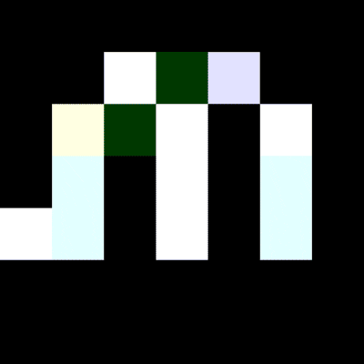

<div>
  <mat-toolbar>
    <div fxShow="true" fxHide.gt-sm="true">
      <button mat-icon-button (click)="sidenav.toggle()">
        <mat-icon>menu</mat-icon>
      </button>
    </div>

    <a mat-button class="siteName" routerLink="/">
      
    </a>
    <span class="example-spacer"></span>
    <div fxShow="true" fxHide.lt-md="true">
      <a mat-button routerLink="/home">Home</a>
      <a mat-button routerLink="/experience">Experience</a>
      <a mat-button routerLink="/about">About</a>
      <a mat-button routerLink="/contact">Contact</a>
    </div>
  </mat-toolbar>
  <mat-sidenav-container fxFlexFill class="example-container">
    <mat-sidenav
      color="primary"
      #sidenav
      fxLayout="column"
      mode="over"
      opened="false"
      fxHide.gt-sm="true"
    >
      <div fxLayout="column">
        <a mat-button routerLink="/home">Home</a>
        <a mat-button routerLink="/experience">Experience</a>
        <a mat-button routerLink="/about">About</a>
        <a mat-button routerLink="/contact">Contact</a>
      </div>
    </mat-sidenav>
    <mat-sidenav-content fxFlexFill>
      <ng-content></ng-content>
    </mat-sidenav-content>
  </mat-sidenav-container>
</div>
